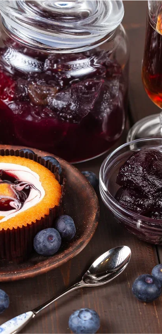
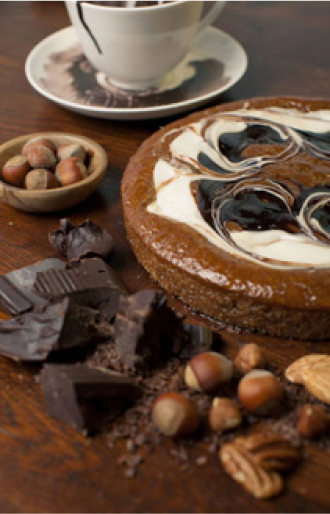
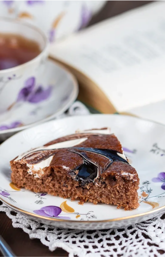

Компания
Компания «Феретти Рус» была образована в 2009 г. в России с открытия первой производственной площадки в Свердловской области. Наша команда поставила перед собой цель создать серию совершенно новых для российского рынка продуктов, объединенных единой маркой Faretti.
Взяв за основу оригинальные рецепты итальянских мастеров-кондитеров, совместив их с собственными инновационными разработками, мы выпустили на российский рынок серию итальянских десертов. В них слились воедино страстный итальянский темперамент, европейское изящество, русская эмоциональность, а главное, желание верить в мечту — то есть все то, что понятно в любой точке мира без слов.
Первой серией таких изделий стали популярные в Италии десерты с двойной начинкой. Взяв все лучшее, что есть в рецептах флорентийских кондитеров, наши мастера создали оригинальный продукт, имя которому — «Faretti». Эти нежные итальянские десерты уже получили положительные отзывы со всех регионов России.
Но мы не останавливаемся, сегодня компания «Феретти Рус» предложила потребителю попробовать сладости, которыми наслаждаются во Флоренции, завтра — которые любят в Милане, в Венеции, Сицилии. Уже в ближайших планах — выпуск новых необычных кондитерских изделий, с аутентичными итальянскими мотивами в рецептуре, вкусе и оформлении.


История бренда
В семейных архивах Фаретти содержится упоминание о том, что десерт Фаретти был придуман в 1763 на юге Италии, в городе Бари, основоположником династии великих итальянских кондитеров Франческо Фаретти. Но настоящим успехом десерт Фаретти обязан сыну Франческо, Бернардо, который сумел превратить маленькую семейную пекарню в преуспевающую сеть кондитерских, переехав из Бари во Флоренцию, постепенно распространив свое влияние по всей Италии. Следующие шесть поколений семьи Фаретти неуклонно развивали и совершенствовали традиции изготовления десерта, его рецептуру и технологию производства.
В 1915 году у Алессандро Фаретти родился сын Антонио последний представителем семейной империи.
Во время Второй мировой войны производство десерта пришлось приостановить. Антонио был мобилизован на фронт и долгие годы провел вдали от дома. В составе дивизии «Коссерия» он был направлен в Россию. В ходе боев на Дону в январе 1943 г. 8-я итальянская армия была разгромлена.
В том же году Италия вышла из войны, а сотни военнопленных, в числе которых был и Антонио Фаретти, оставались в лагерях на территории СССР до 1946 года. Более двух с половиной тысяч итальянских военнопленных находились в лагере № 160, располагавшемся в Спасо-Евфимиевском монастыре г. Суздаля. Именно там Антонио Фаретти встретил свою судьбу. Елена работала врачом. Эта молодая девушка с необыкновенно яркой внешностью вернула Антонио к жизни. Роман был таким бурным, что молодые люди не расставались ни на минуту. Преодолев многочисленные бюрократические препоны и сопротивление родных, в 1946 году Елена покинула СССР в качестве жены Антонио Фаретти.
В 1948 году сеть кондитерских Фаретти вновь успешно заработала. Уже через два года Антонио Фаретти стоял во главе мощной кондитерской империи, обретшей былую популярность. У Антонио и Елены родились три прекрасные дочки. К сожалению, ни одна из них не продолжила семейное ремесло.
Скончался Антонио Фаретти в возрасте 83 лет во Флоренции, в 1998 году. Ненадолго пережила его и Елена.
В 2008 году Анна Фаретти, старшая дочь Антонио и Елены, из-за экономического кризиса была вынуждена закрыть сеть кондитерских и продать торговую марку, рецептуру и технологию производства знаменитого десерта. Среди нескольких претендентов была выбрана российская компания «Русский Кондитерский Холдинг» - как дань уважения к истории семьи Фаретти.
Список наград